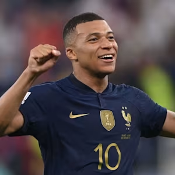
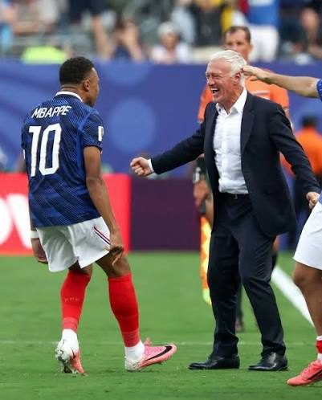

Kylian Mbappé est né le 20 décembre 1998 à Paris. Il a grandi à Bondy, où il a commencé à jouer au football très jeune.
Il est connu pour sa vitesse, ses dribbles et ses buts. Il joue au poste d'attaquant.
Il a d'abord joué à l'AS Bondy. Il est ensuite passé par le centre de formation de Clairefontaine avant de rejoindre Monaco.
Il a commencé sa carrière professionnelle à l'AS Monaco. Il a remporté le championnat de France avec ce club en 2017.
Il a ensuite joué au Paris Saint-Germain de 2017 à 2024. Depuis 2024, il joue au Real Madrid.
À Paris, il a remporté plusieurs championnats et plusieurs Coupes de France. Il est devenu un joueur important du club grâce à ses nombreux buts.
Son arrivée au Real Madrid marque une nouvelle étape dans sa carrière. Il découvre alors le championnat espagnol.
Kylian Mbappé joue avec l'équipe de France depuis 2017. Il a remporté la Coupe du monde en 2018 et la Ligue des nations en 2021.
Pendant la Coupe du monde 2022, il a marqué trois buts en finale. La France a terminé à la deuxième place.
Lors de la Coupe du monde 2018, il a marqué quatre buts. Il a aussi reçu le prix du meilleur jeune joueur de la compétition.
En 2022, il a terminé meilleur buteur de la Coupe du monde avec huit buts. Il est devenu capitaine de l'équipe de France en 2023.
